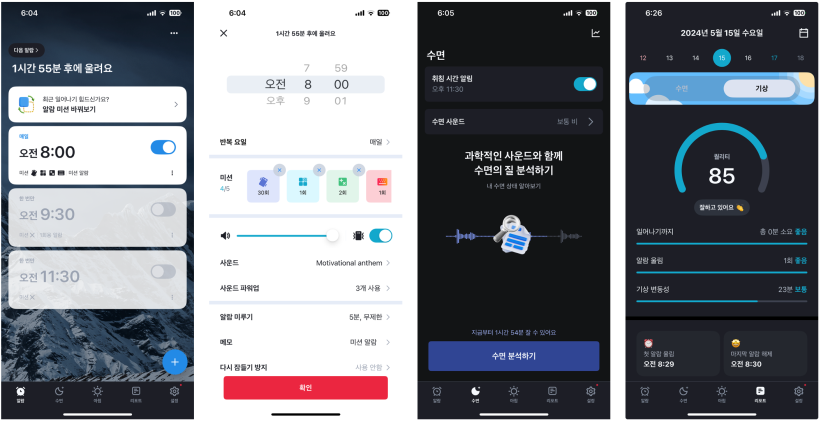
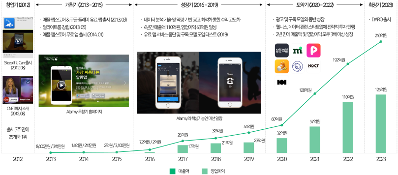
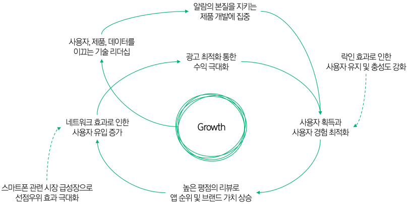
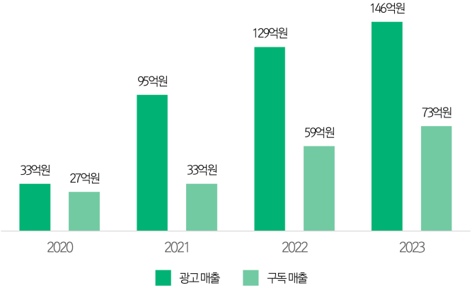

In August 2012 a solo developer built an alarm app called "Sleep If U Can" in little more than a month; within three weeks of release it topped its Google Play category in 25 countries. That app became today's Alarmy, with 82 million cumulative downloads and category number one on Google Play and the Apple App Store in 97 countries. This study divides Delightroom's success into five phases — founding, pioneering, growth, take-off and expansion — and analyses the key success factor in each through management theories including the lean startup, first-mover advantage, lock-in effects and the flywheel effect.
The number of start-ups founded in Korea reached a record 126,905 companies in 2021 with KRW 7,680.2 billion invested, but an investment winter began in 2022 and 2023 investment was down 29.7% from 2021. The five-year survival rate of Korean start-ups is 33.8%, 26th among 28 OECD comparison countries, and across the full life cycle the failure rate approaches 90%. The strategies of past success stories alone have limits in raising survival rates. This study seeks to identify and share with Korea's start-up ecosystem a success story that broke with established approaches.
The core feature of Alarmy, developed by Delightroom, is the "mission alarm": to switch the alarm off the user must solve a maths problem, type out a phrase, shake the phone or take a photograph. Around this it offers sleep analysis and reports, prevention of falling back asleep, and bedtime reminders.


The study uses four theoretical frames. The lean startup (Eric Ries, 2008) is a methodology of releasing a minimum viable product (MVP) quickly and repeating a build–measure–learn cycle at low cost in a short time. First-mover advantage refers to the strategic benefits in brand recognition, customer loyalty and barriers to entry that accrue to the first firm into a market, while lock-in describes the difficulty consumers face in moving to a competitor because of switching costs, the user learning curve and network effects. The flywheel effect (Jim Collins) is a cycle in which small internal forces accumulate continuously and growth accelerates, and core competency (Hamel and Prahalad, 1990) is a firm's distinctive capability meeting three conditions: customer value, competitive advantage and extendability.
As of 2010 hundreds of alarm apps were pouring into the Apple App Store, but most did no more than set a time and sound an alarm, and no dominant player had emerged. In 2012 Shin Jae-myung, who found mornings hard, drew inspiration from the Kickstarter project "Ramos Alarm Clock" (an alarm clock separating where the alarm sounds from where it is switched off) and designed an app that could be silenced only by photographing an object at a location the user had photographed in advance. Enrolled in the master's programme at KAIST's School of Computing and training as a second-cohort SW Maestro, he released "Sleep If U Can" on Google Play on 22 August 2012, little more than a month after starting development. That first version, stripped of every extraneous feature and retaining only the function carrying the core value of "switch off with a photo," was an exemplary MVP of the kind the lean startup emphasises.
A successful debut on zero marketing. Shin obtained the email addresses of foreign journalists himself and sent out a press kit; CNET in the United States described the app as an "evil plan for the morning." That was the beginning of its nickname, "the devil's alarm." A post of under 100 characters on the community site Todayhumor drew about 90,000 views, and a 42-second YouTube introduction, "World's most annoying alarm app," accumulated 630,000 views. All of this was achieved by a single developer with no professional marketer and not one won spent on advertising.
The build–measure–learn cycle. The team monitored bugs and crashes in real time with BugSense and analysed user behaviour and retention with Localytics to set development priorities. Its own analysis showed that 95% of users switched the alarm off within three photographs, but the team concentrated on lowering the threshold for the remaining 5%; when told that the alarm could be silenced by force-quitting the app, they made even that impossible. Users left praise saying "the app has become even more devilish." As a result the cumulative average rating on Google Play improved sharply, from 3.71 in August 2012 to 4.50 in July 2013.
Maximising first-mover advantage. Korea's smartphone penetration grew at extraordinary speed, from 22% in 2011 to 49% in 2012 and 66% in 2013, and the number of apps in the major stores rose from about 100,000 in 2010 to about 1.3 million in 2014. Searching "alarm" on Google Play or the App Store at that time returned Sleep If U Can first in most countries, and the network effect created by that early user base became a barrier to entry that latecomers found hard to approach against Delightroom, the first mover in the alarm app market.
In January 2014 Delightroom rebranded the app's identity as Alarmy. Users kept growing, but annual revenue in 2015 was only about KRW 200 million, and because most of it came from advertising the company made advertising optimisation its core strategy. It used 10 to 20 ad networks, analysing efficiency weekly to adjust priorities, and ran a range of experiments on refresh intervals, display frequency and A/B testing of ad formats. From 2016 it used the supply-side platform MoPub to reach global advertising demand through real-time bidding with more than 180 DSPs, maximising fill rate and eCPM. Revenue grew 260% year on year in 2016 and 261% again in 2017, and the operating margin reached a remarkable 65% in 2017.
User-, product- and data-centred technology leadership. Delightroom's DNA is defined as user-centric, product-oriented and data-driven. Shin handled most of the roughly 1,000 daily reviews and 100 emails himself, and the development team bought close to 100 different smartphone models to build a test environment. A single A/B test changing the reward period on rewarded advertising from 30 days to 60 raised the conversion rate more than twofold, from 6% to 14%. Where a course promised short-term revenue but was judged to harm the product, the team abandoned it outright.
Lock-in verified through review data. The researcher crawled English-language Google Play reviews from 2016 to 2018 and compared Alarmy with competing apps. Alarmy had about 200,000 reviews — nearly twice as many as Alarm Clock Xtreme & Timer (about 110,000) — yet its response rate was the highest at 10.60%, and its average response length of 5.19 words was the most considered. The data verify that building trust and a functional relationship with users raised loyalty and produced a lock-in effect.
The flywheel effect. The growth engine — technology leadership and product development true to the essence of an alarm — created momentum running from user acquisition and user experience optimisation, through highly rated reviews raising app rankings and brand value, to organic user inflow through network effects, revenue maximisation through advertising optimisation, and reinvestment. On top of this, maximised first-mover advantage created by the rapid growth of the smartphone market (an external factor) and lock-in (an internal factor) acted as growth catalysts, turning the flywheel faster still. The flywheel built during the growth phase kept turning through 2022, delivering revenue of KRW 19.2 billion, operating profit of KRW 11 billion and an operating margin of 57%; over the six years from 2016, revenue grew 2,567% and operating profit 5,400%.

Creating customer value through a successful user experience. Delightroom's mission is to "wake people up, fully and completely." Where a conventional alarm's responsibility centres on the moment of waking, Alarmy widens the span from before falling asleep to just after waking, delivering the value of a successful morning to an average of 4.5 million users a month. Delightroom holds that moving 1% of users deeply matters more than satisfying 50%. Implementing as actual features the requests to make it impossible to switch off the phone or delete the app while the alarm sounds was done for the 1% of core users who genuinely struggle to get up. A single improvement — building actual use of the app into onboarding — raised day-one retention by 15–20%.
Competitive advantage built on data analytics. In 2019 Delightroom experimented with removing the paid app and introducing a subscription model. Validating demand through email collection and A/B testing of six packages, it introduced subscriptions, and although these initially cannibalised advertising revenue, the transition ended early: 2021 brought KRW 9.5 billion in advertising revenue (188% growth) and KRW 3.3 billion in subscription revenue, and 2023 brought KRW 14.6 billion in advertising and KRW 7.3 billion in subscriptions for total revenue of KRW 24 billion. Notably, over the three years to 2023 daily active users grew 20% while advertising revenue grew 224%. The analytics capability that generates more revenue from the same user base is itself the competitive advantage. Against Sweden's listed Sleep Cycle, a company of comparable size, its three-year average operating margin is more than double — 56% against 22% — and as of November 2024 Alarmy holds a commanding 49.31% of the alarm app market.

Strategic investment and the launch of DARO. From 2021 Delightroom extended into wellness through seven investments and acquisitions, including the sleep brand Sambunuiil, the routine management app MyRoutine (acquired) and Soundable Health. In 2022 it turned Alarmy's advertising monetisation know-how into a solution, DARO (Delightroom Ad Revenue Optimizer), launching it unofficially with a team of just two; it earned KRW 400 million in 2022 and KRW 2 billion in 2023, and with the official launch in December 2023 the company entered the B2B advertising revenue optimisation business. Revenue growth of 20–30% is considered high in the mediation industry, but DARO delivered average customer revenue growth of 80% — evidence of the extendability of its core competency.